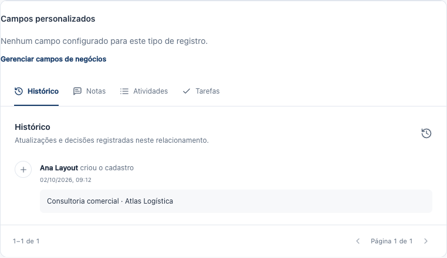
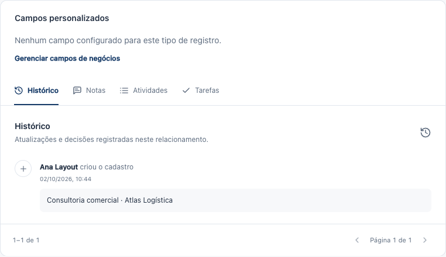
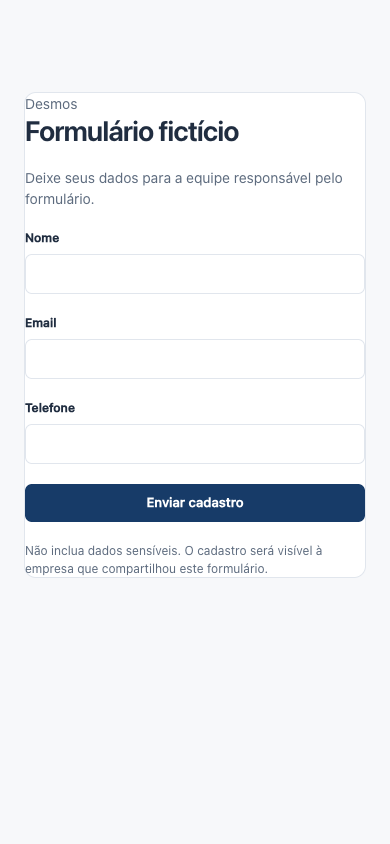
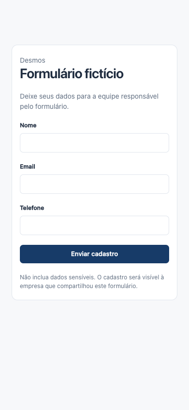
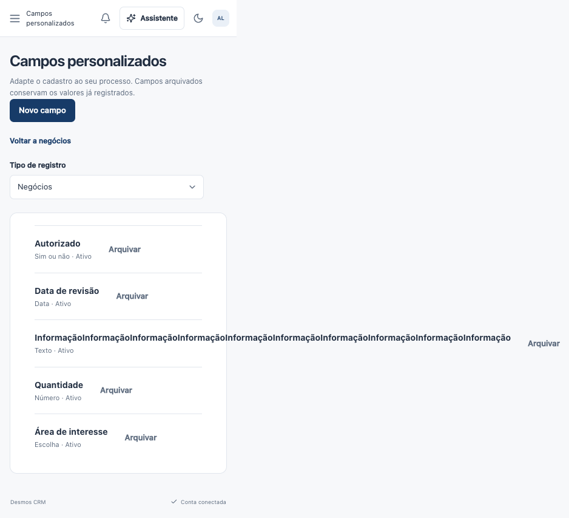
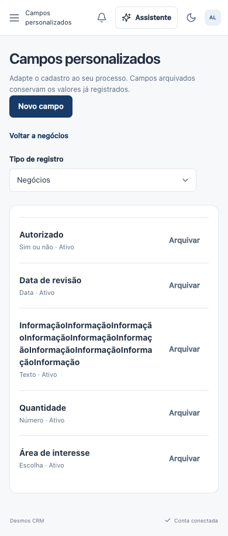
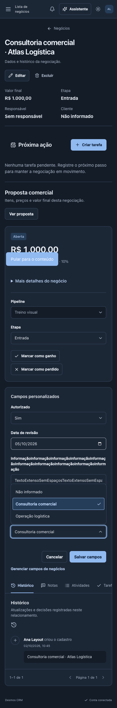
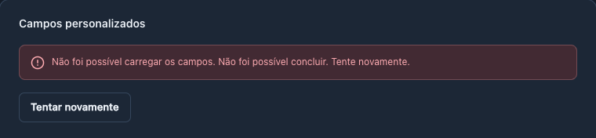

Correção de campos e espaçamento
Anexo inspecionado e causa reproduzida: a seção Campos personalizados estava sem margem interna. Também foram corrigidos nomes longos, a lista administrativa e o card de captura. Selects mantêm seu comportamento.
Validação e limites · Anexo original · Resultado E2E final
Negócio — desktop claro
Antes: conteúdo colado à borda
Depois: alinhado ao Histórico
Captura pública — mobile
Antes
Depois
Nomes longos — gestão de campos
Antes: transbordamento
Depois: quebra dentro da lista
Mobile escuro: edição e select

Desktop escuro: erro e recuperação
